A Custom CNN Architecture for Driver Fatigue Detection in Public Transportation
This paper presents a systematic deep learning study for four-class facial emotion recognition (Happy, Neutral, Sad, Surprise) applied to 48×48 pixel grayscale images. Six architectures were evaluated: an ANN baseline, two custom CNNs, three transfer learning models (VGG16, ResNet50V2, EfficientNetB0), and a purpose-built Complex CNN with five convolutional blocks, batch normalization, and data augmentation.
The Complex CNN achieved 82.03% test accuracy (Macro F1: 0.82) on a balanced 128-image test set, outperforming the best transfer learning model by 21.87 percentage points. The primary failure mode — Neutral/Sad confusion — reflects documented human perception limits at low-intensity affect.
The technical task is a four-class image classification problem. Given a 48×48 pixel grayscale image of a human face, the model must predict one of four emotion labels. In the driver monitoring context, each class maps directly to a safety state.
Alert and engaged — nominal operating state
Baseline — monitoring for degradation
Fatigue onset — primary detection target
Sudden event response — hazard or near-miss
Driver fatigue contributes to 17.6% of all fatal crashes in the United States (AAA Foundation, 2024), with an annual societal cost of $109 billion (NHTSA). In public transportation — school buses carrying 21.4 million US children daily, 65,000 transit buses serving cities nationwide — a single fatigue-related incident carries severe human and financial consequences.
The EU General Safety Regulation mandated driver monitoring systems on all new vehicles from July 2024. The US NHTSA is developing parallel requirements. Governments are not deciding whether to adopt this technology — they are deciding how to procure it.
All images are 48×48 pixels in grayscale format. The test set is perfectly balanced at 32 images per class, ensuring accuracy figures are not inflated by any majority class.
| Split | Total | Happy | Neutral | Sad | Surprise |
|---|---|---|---|---|---|
| Training | 15,109 | 3,976 | 3,978 | 3,982 | 3,173 |
| Validation | 4,977 | 1,825 | 1,216 | 1,139 | 797 |
| Test | 128 | 32 | 32 | 32 | 32 |
| Total | 20,214 | 5,833 | 5,226 | 5,153 | 4,002 |
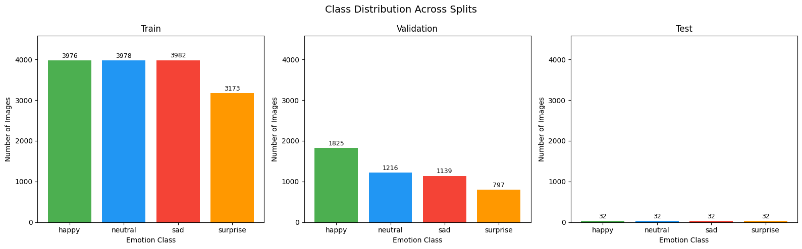
Per-class pixel statistics reveal the core classification challenge. Mean intensity values differ only modestly, and standard deviations are nearly uniform — confirming that spatial structure, not brightness, is the discriminative signal.
| Class | Mean Intensity | Std Dev | Visual Characteristics |
|---|---|---|---|
| 😊 Happy | 130.62 | 63.59 | Most visually distinct — broad smiles, Duchenne markers |
| 😐 Neutral | 123.99 | 64.98 | Defined by absence of expression — most ambiguous class |
| 😔 Sad | 120.72 | 64.63 | Only 3.27 points below Neutral mean |
| 😮 Surprise | 147.25 | 63.90 | Brightest class — wide eyes, open mouth |
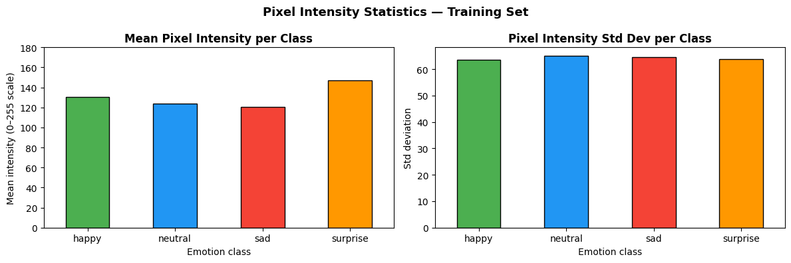
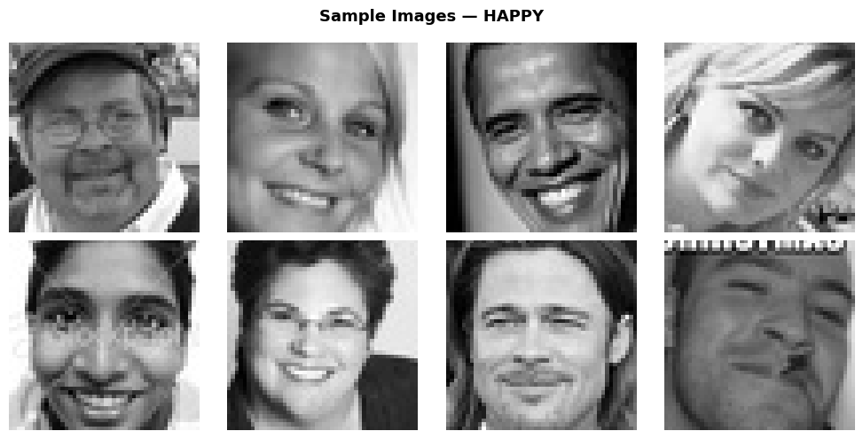
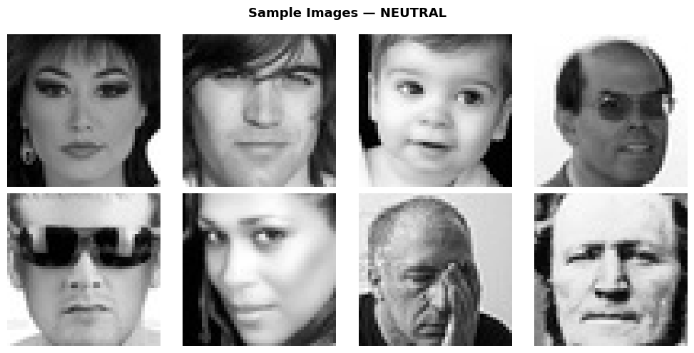
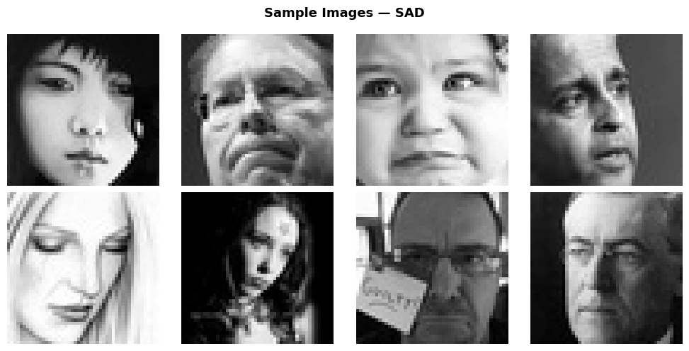
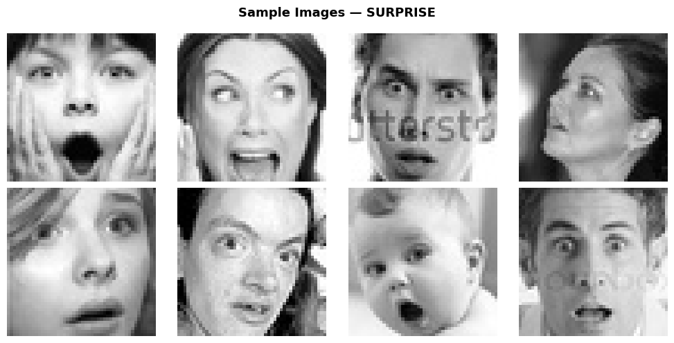
Six architectures were evaluated in sequence, each motivated by the failures observed in the previous model. All share the same final classification head and training data pipeline.
A fully connected network with two hidden layers (256 and 128 units, ReLU, dropout 0.4/0.3). Treats each pixel as an independent feature — discarding all spatial relationships. EarlyStopping triggered at epoch 13.
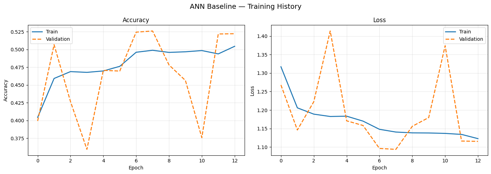
CNN Model 1 (2 conv blocks: 32→64 filters, MaxPooling, Dropout 0.25) introduces spatial feature detection. The +17.97 pp improvement over ANN quantifies the value of understanding where features occur on a face. CNN Model 2 adds a third block (128 filters), gaining +5.47 pp.
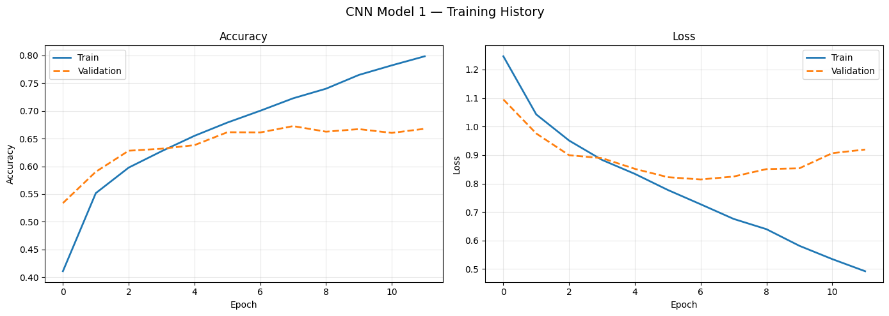
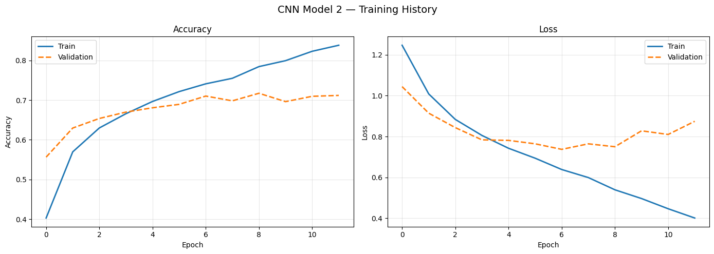
Three ImageNet-pretrained architectures (VGG16, ResNet50V2, EfficientNetB0) with frozen base layers and custom classification heads. Despite hundreds of millions of parameters, all three underperformed CNN Model 1.
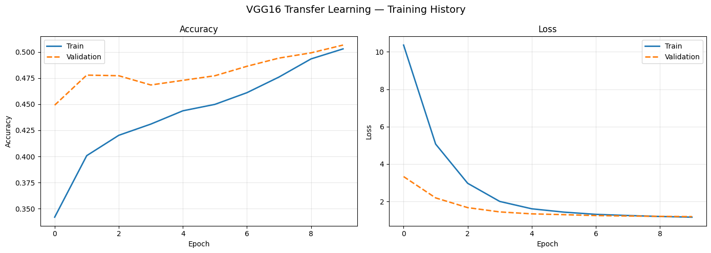
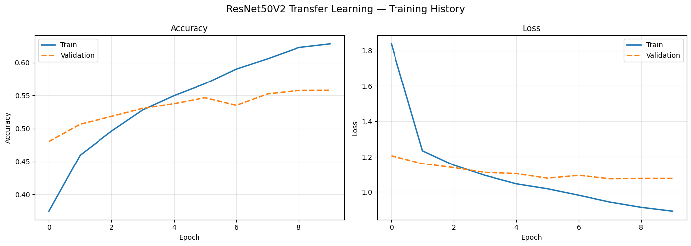
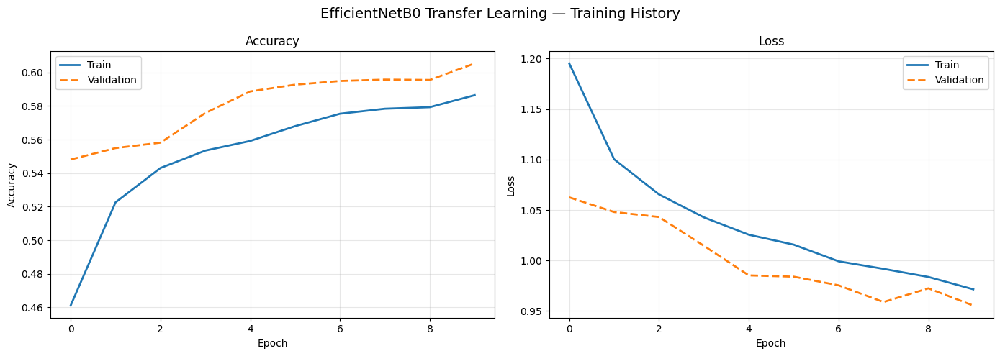
Designed specifically to address every failure mode in the experimental record. Five convolutional blocks (32→64→128→256→512 filters), Batch Normalization at every layer, data augmentation (rotation ±15°, zoom ±10%, horizontal flip), and ReduceLROnPlateau enabling 30 full epochs of improvement.
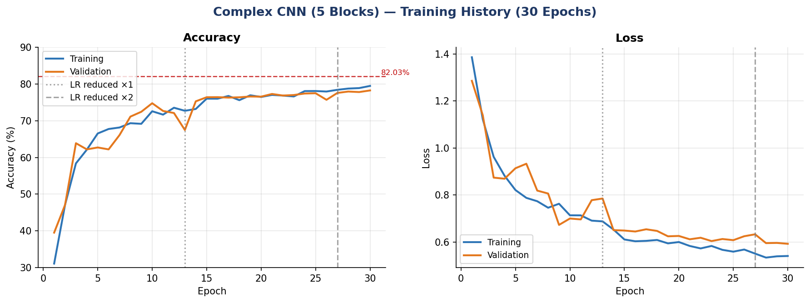
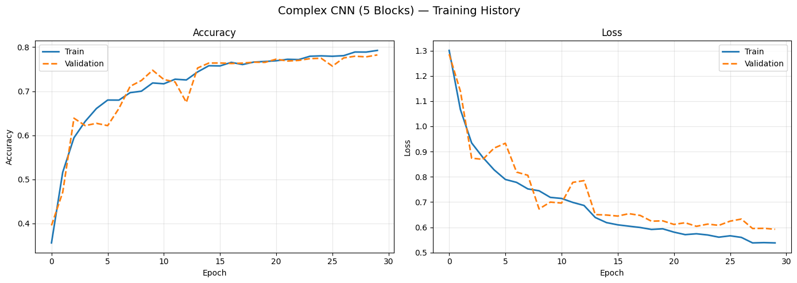
The full progression from ANN baseline to the Complex CNN, achieved entirely through architectural choices on the same training data.
| Architecture | Test Accuracy | Test Loss | Macro F1 | Category |
|---|---|---|---|---|
| ANN Baseline | 51.56% | 1.1095 | 0.51 | Baseline |
| VGG16 | 51.56% | 1.1832 | 0.52 | Transfer |
| ResNet50V2 | 55.47% | 1.0878 | 0.55 | Transfer |
| EfficientNetB0 | 60.16% | 0.9352 | 0.59 | Transfer |
| CNN Model 1 | 69.53% | 0.7483 | 0.70 | Custom CNN |
| CNN Model 2 | 75.00% | 0.6780 | 0.75 | Custom CNN |
| Complex CNN (Ours) | 82.03% | 0.5634 | 0.82 | Final Model |
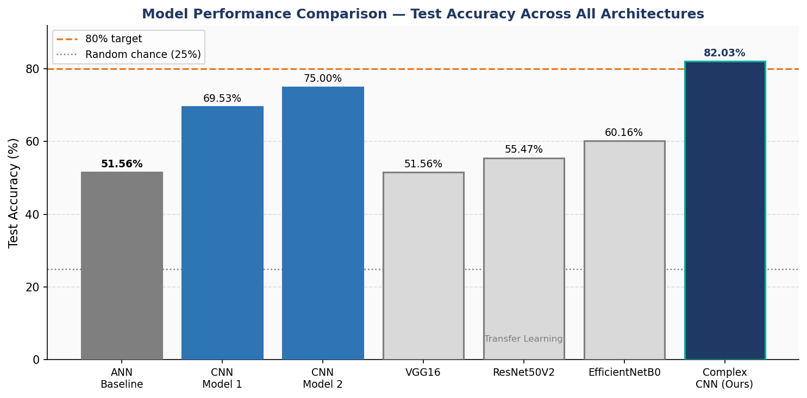
Strong performance on visually distinctive emotions; predictable challenge on the Neutral/Sad boundary.
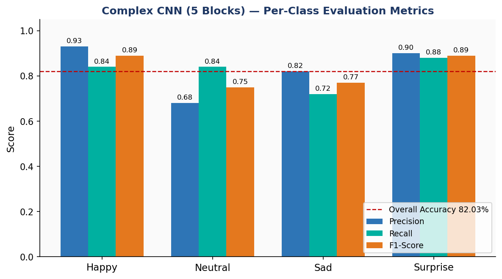
The primary confusion pair is Neutral ↔ Sad — consistent with the 3.27-point mean pixel intensity separation. Happy and Surprise dominate the diagonal with clear visual signals.
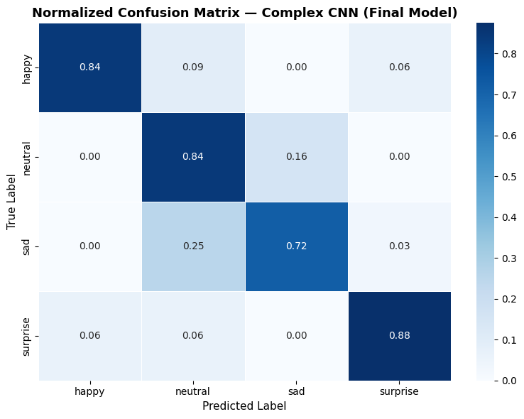
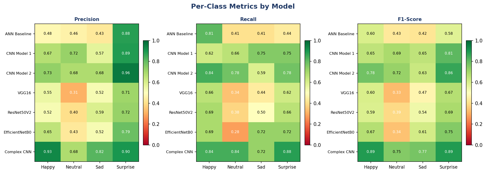
The +17.97 pp jump from ANN (51.56%) to CNN Model 1 (69.53%) on identical data quantifies the value of spatial feature detection. Understanding where features appear on a face — not merely that they exist — is the core capability.
CNN Model 2 plateaued early without batch normalization. The Complex CNN's 30-epoch continuous improvement demonstrates that batch normalization allows full exploitation of architectural depth.
VGG16, ResNet50V2, and EfficientNetB0 — containing hundreds of millions of ImageNet-trained parameters — all underperformed CNN Model 1. Pre-training on the wrong domain is as limiting as no pre-training.
A single preprocessing mismatch during EfficientNetB0 experiments caused complete model failure. Knowing each architecture's preprocessing contract is a non-trivial skill that compounds into results.
Despite 20% fewer training samples, Surprise achieves F1 0.89 — equal to Happy. Its compound visual signal (raised brows + wide eyes + open jaw) provides redundant features that remain discriminative at low resolution.
The Complex CNN's resolution of this boundary (Neutral F1: 0.75, Sad F1: 0.77) compared to CNN Model 2 (0.72, 0.63) is the key advance for the driver monitoring application — these are the two states that determine fatigue detection.
The proposed deployment is an edge-inference driver monitoring system for public transportation fleets. All inference runs locally on an embedded device mounted inside the vehicle cab. No face images leave the vehicle during normal operation.
| Component | Unit Cost | Notes |
|---|---|---|
| Raspberry Pi Camera Module 3 NoIR | $25 | IR-capable, 12MP, designed for Pi 5 |
| Raspberry Pi 5 (8GB RAM) | $80 | Sufficient for real-time CNN inference |
| Waveshare SIM7600G-H 4G LTE HAT | $50 | Cellular telemetry — event metadata only |
| Enclosure, power, mounting, alerts | $145 | Off-the-shelf components |
| Total hardware | $300 | |
| Installation | $200 | Fleet technician, one-time |
| Year 1 Total | $500/vehicle | + ~$40–50/yr ongoing (cellular + maintenance) |
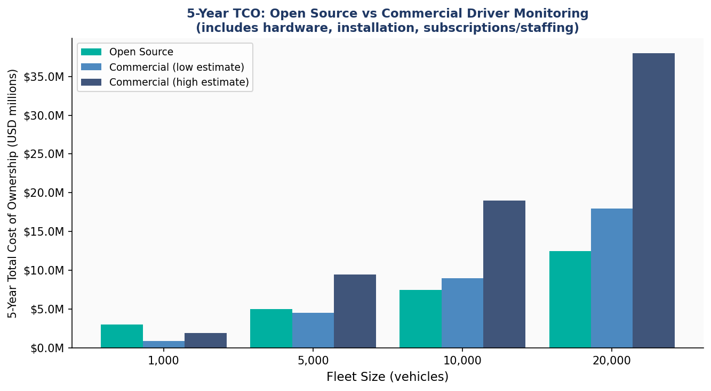
128 images (32/class). Results should be validated on a larger held-out set before production. Confidence intervals are wide at n=32.
F1 0.75/0.77 — substantially improved, but not yet sufficient for standalone safety-critical decisions. Should function as one signal among several.
Training data has not been independently audited across age, gender, and ethnicity. A bias audit with disaggregated metrics is required before public deployment.
The model expects a pre-cropped, centered face. A separate upstream face detection step (MTCNN or OpenCV Haar Cascade) is required for video deployment.
A purpose-built convolutional neural network significantly outperforms transfer learning approaches for facial emotion recognition on domain-specific low-resolution grayscale data. The Complex CNN achieves 82.03% test accuracy and Macro F1 of 0.82 — exceeding the project target and outperforming EfficientNetB0 by 21.87 percentage points.
The model is technically deployable today as a supporting signal within a multi-sensor safety system — pending bias auditing and validation on a larger held-out dataset.